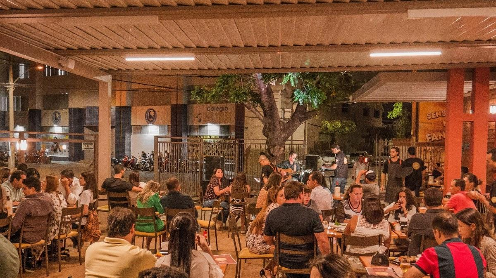
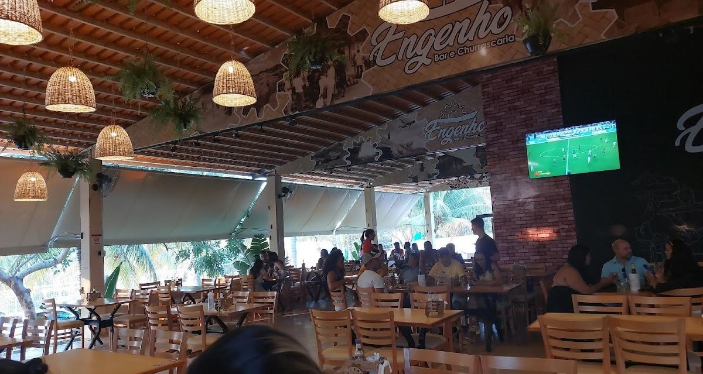
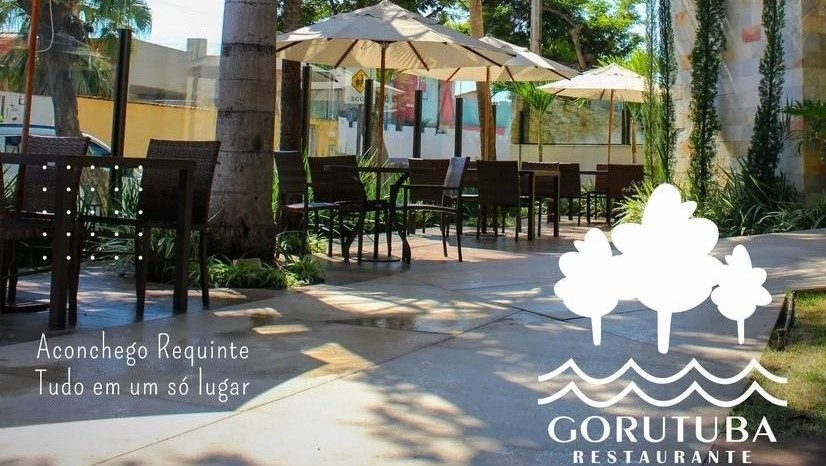
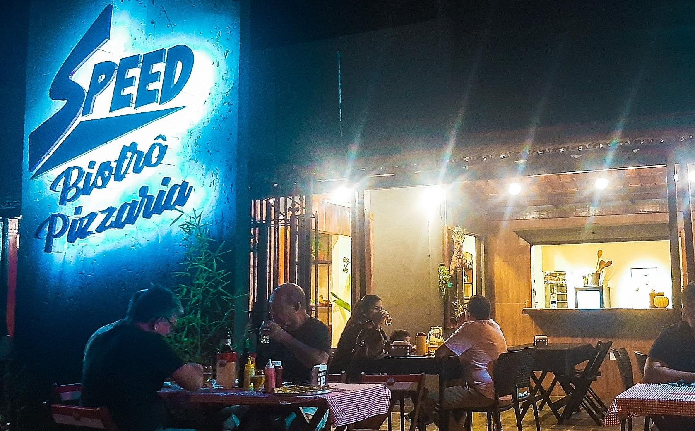

Restaurantes!
Alameda
Localizado no centro de Janaúba, Alameda 29 é um ótimo local para um happy hour com os amigos. Ambiente amplo e agradável combinado com uma gastronomia 100% Nortineira, são um ótimo combo para seu grupo. Falando em grupo, talvez fosse interessante experimentar um de seus petiscos Nortineiros, que tal uma Brusqueta Nortineira?
Horário de Funcionamento: Segunda à Sexta das 10:00 horas - 14:00
horas | 17:00 horas - 01:00 hora.
Sábados e Domingos das 10:00
horas - 01:00 hora.
Modelo de Serviço: Self Service | A lá carte.
Endereço: R. Francisco Sá, 208 - Centro, Janaúba - MG.
Localização Google
Casa da Esquina
Localizado no centro de Janaúba, a Casa da Esquina conta com uma gastronomia diversa, tendo em seus menus aperitivos, porções, grelhados, e muitos outros pratos para se deleitar. Mas o mais importante é que a Casa da Esquina abraçou a causa e é agora 100% Nortineira, não custa nada provar seu Pastel de Carne Seca e Banana.
Horário de Funcionamento: Terça à Domingo das 18:00 horas - 00:00 horas.
Modelo de Serviço: A lá carte.
Endereço: R. Rui Barbosa, 107 - Centro, Janaúba - MG.
Localização Google
Claudius Bar

No centro de Janaúba, o Claudius Bar oferece aos clientes além da música e uma ótima gastronomia, 100% Nortineira também é sua marca, com bebidas e pratos diversos, que tal experimentar uma Pizza de Banana com Carne Seca?
Horário de Funcionamento: Segunda à Sábado das 18:00 horas - 02:00 horas.
Modelo de Serviço: A lá carte.
Endereço: R. Rio Preto, 91 - Centro, Janaúba - MG.
Localização Google
Engenho - Bar e Churrascaria
Próximo a UNIMONTES, o Engenho está localizado não só perto da Universidade, mas também em um local amplo e bastante tranquilo para uma refeição com um ótimo ambiente e gastronomia 100% Nortineira. Ao vir aqui, não deixe de experimentar um dos pratos 100% Nortineiros, como por exemplo os Chips de Banana com Guacamole.
Horário de Funcionamento: Terça à Sexta das 18:00 horas - 02:00
horas.
Sábados das 11:00 horas - 03:00 horas e Domingos das 11:00 horas -
21:00 horas.
Modelo de Serviço: Self Service (Domingos) | A lá carte (Demais dias).
Endereço: Av. Reinaldo Viana, 2630 - Janaúba.
Localização Google
Gorutuba Park Hotel
O Gorutuba Park Hotel é um dos primeiros pontos de referência assim que se chega na rodoviária de Janaúba. A história que o Gorutuba tem fala por si só, e por tudo isso, também faz parte dos 100% Nortineiros daqui de Janaúba. Com uma excelente gastronomia, não custa nada experimentar um prato Nortineiro aqui, que tal um Filé Mignon a Palito Nortineiro?
Horário de Funcionamento: Segunda à Domingo das 11:00 horas - 15:00 horas | 18:00 horas - 00:00 horas.
Modelo de Serviço: Self Service (Almoço) | A lá carte (Jantar).
Endereço: R. Américo Soares, 851 - Centro, Janaúba - MG.
Localização Google
La Casa Grill
No bairro Esplanada, reside o La Casa Grill, esse com toda certeza é 100% Nortineiro. Como o próprio nome já diz, seu trabalho maestral é com os grelhados, e também com vários outros pratos em seu cardápio. Que tal provar um prato nortineiro? O que acha de um "Uai Sô"? Ah, eu estou falando do Drink.
Horário de Funcionamento: Terça à Domingo das 17:30 horas - 23:59 horas.
Modelo de Serviço: A lá carte.
Endereço: Av. Pres. Kennedy, 82 - Esplanada, Janaúba - MG.
Localização Google
Oscar Gold

O que seria melhor do que receber um Oscar? Ir até ele? Em Guimaraes, o Oscar Gold é um dos primeiros locais que verá antes de entrar em Janaúba, sendo também uma obra 100% Nortineira. Além do seu espetacular hotel, sua gastronomia também ressalta a cultura do Norte de Minas, com sua Tapioca Nortineira Franbacon.
Horário de Funcionamento: Segunda à Domingo.
Modelo de Serviço: Café da manhã.
Endereço: Av. Pref. Edílson Brandão, 3800 - Guimaraes, Janaúba - MG.
Localização Google
Speed Bistrô Pizzaria
No centro de Janaúba está o Speed Bistrô Pizzaria, que além de sua especialidade com as massas, também possui especialidade na culinária 100% Nortineira. Massa também pode ser doce, que tal provar uma Pizza Nortineira Doce? Ou prefere uma Salada Nortineira?
Horário de Funcionamento: Segunda à Domingo das 18:00 horas - 00:00 horas.
Modelo de Serviço: Self Service | A lá carte.
Endereço: R. Aimorés, 369 - Centro, Janaúba - MG.
Localização Google
Restaurante Fernandino
Na avenida Manoel Athayde está localizado o Restaurante Fernandino, com um ótimo visual e um toque bem requintado em seus pratos e drinks. Fernandino é 100% Nortineiro, e com isso, resolveu espalhar sua culinária a vários níveis, trazendo também a cultura asiática para seus pratos, como o Hot Sol Nortineiro.
Horário de Funcionamento: Terça à Domingo das 11:00 horas - 15:00 horas | Jantar após as 18:00 horas.
Modelo de Serviço: Self Service (Almoço) | A lá carte (Jantar).
Endereço: Av. Manoel Athayde, 558 - Esplanada, Janaúba - MG.
Localização Google